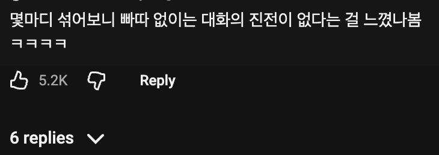
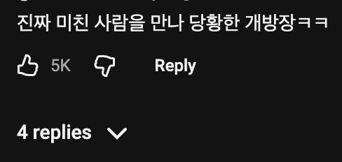
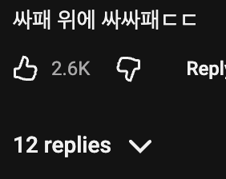
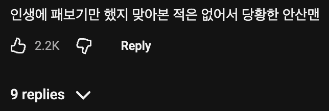
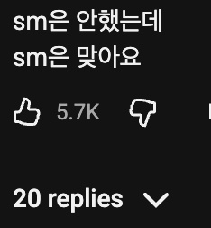

난 우울하면 빠따를 들어
SM 답네
옛날 침착맨의 무례한 맛이 덜해졌네
이제 거물 양지맨 되면서 디씨인 매운맛 다 빠짐..
저러고 진짜 맞음ㅋㅋㅋㅋㅋㅋㅋㅋ
효연 쟤도 요새 보니까 또라이던데 SES로 치면 바다 느낌?
효연도 차라리 요즘시대에 아이돌했으면 더 크게 떳을것같다 ㅋㅋ
시대를 잘못 타고난 사람인듯
ㅇㅇ 지금이라도 유튜브해서 다행 ㅎㅎ
효연포지션 잡아보라니까 저 맨끝구석에 가서 빠다부르던데 ㅋㅋ
하필 마스터소드를 뽑았어
춤은 계속 추면 실력이 좋아진다
맞으면서 추면 더 빨리 좋아진다
정예인